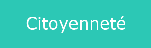
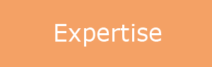

Depuis 40 ans, à l'initiative d'élus de comités d'entreprise, les associations du Réseau Cezam développent un concept original de coopération et de mutualisation entre CSE et collectifs adhérents.
→ Années 1960 : Les premières mutualisations
1967 Création de l’INVAC (aujourd’hui UNCOVAC) : mutualisation et solidarité autour des vacances
1968 Création d’Alicea par la Fédération CFDT de l’Agro-alimentaire.
→ Années 80 : Organisation et première activité nationale
Création des premières Inter-CE interprofessionnelles qui se structurent progressivement en un Réseau grâce à des activités et des valeurs communes.
En 1988, création de la carte Cezam, premier outil national du Réseau.
→ Années 90 : La notion de réseau prend tout son sens et celui-ci commence à se structurer
Le Réseau se développe autour d’un objectif : mettre en commun des idées et des moyens, afin de permettre à tous de bénéficier des activités développées.
Leurs mots d’ordre : ouverture, mutualisation, coopération, solidarité, émancipation…
→ Années 2000 : La mutualisation dans le Réseau Cezam se met en marche
2002
L’UES Cezam, après que le Réseau se soit détaché de la CFDT, voit ses missions évoluer autour de 3 pôles : le Carte Cezam, la communication et le développement de technologies informatiques.
2006
Les Inter-CE décident de créer une Fédération pour favoriser l’animation, la coordination, la pérennisation et le développement du Réseau.
Chaque Inter-CE est alors représentée au Conseil d’Administration : 1 association = 1 voix.
→ Années 2010 : De nouveaux outils et nouvelles actions au bénéficie des adhérents Cezam
2010
En complément des sites internet des Inter-CE, l’UES Cezam crée www.carte-cezam.fr, avec pour la première fois une visibilité nationale de l’offre et des activités Cezam
2016
Création de l’Observatoire Cezam "L’action des élus sous l’œil des experts".
Journée d’études, de réflexion, d’apports théoriques et pratiques pour les CSE adhérents Cezam.
2019
→ Une charte commune affirmant les valeurs du Réseau
Elle permet d’inscrire l’Homme et le bien-vivre ensemble dans les actions des associations, devenant ainsi des acteurs de l’Economie Sociale et Solidaire.
→ Des objectifs communs
→ Une volonté commune
Des adhérents acteurs !

Repenser un CSE plus citoyen et solidaire
Au carrefour des initiatives locales !

Une présence sur le terrain
 Se connecter
Se connecter Nous trouver
Nous trouver Nous contacter
Nous contacter